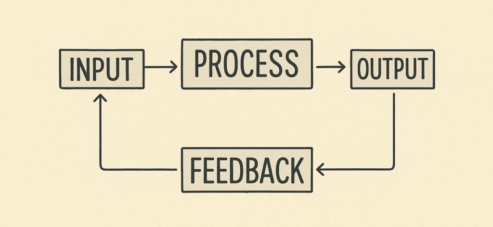

Home
Binairstelsel
Kleurmodellen
Invoer - verwerking - uitvoer
Compressie: Bitmap/Vector
Over mij
Wie ben ik?
Ajax
Hoe werkt een computer?
Een computer werkt altijd op een vaste manier:
Invoer van informatie
Opslaan van deze informatie
Verwerking van deze informatie
Uitvoer van resultaten
